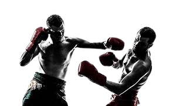

Box Olimpíadas
Historia Do Box Olimpíadas
O Boxe nas Olimpíadas está presente desde a edição de 1904, disputada em Saint
Louis nos Estados Unidos. A única exceção aconteceu nas Olimpíadas de 1912, ocorrida
em Estocolmo, já que uma lei proibia a prática do esporte em solo sueco.
Em 2009, o Comitê Olímpico Internacional aprovou a introdução do boxe feminino, tendo
a primeira disputa entre as mulheres na Olimpíada seguinte, que aconteceu em 2012,
em Londres, na Inglaterra.
Atualmente o Boxe nas Olimpíadas é dividido em sete categorias no masculino e seis
categorias no feminino. Essas categorias são divididas pelo peso dos atletas,
com a pesagem oficial sendo feita em quilogramas desde a Olimpíada de Londres
em 1948.
